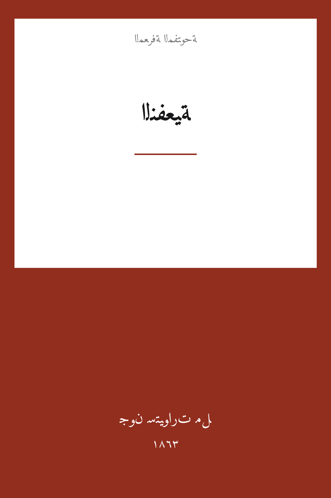

Utilitarianism
النفعية
الفلسفة
ملك عام
ترجمة كاملة
النفعية — البيان الكامل لأشهر نظريات الأخلاق في الحداثة: الخيرُ هو السعادة، والصوابُ هو الفعلُ الذي يعظّمها لأكبر عدد. يردّ مل فيها على خصوم مذهبه الذين اتهموه بأنه «فلسفة لذّات الخنازير»، فيميّز اللذات نوعاً وكمّاً ويجعل «سقراط غيرَ راضٍ أعلى من أحمقٍ راضٍ»، ثم يصل النظرية بالضمير والفضيلة والعدالة في فصلٍ ظلّ مرجعَ كل نقاشٍ لاحق. ترجمة كاملة للكتاب بمقدمة الأفكار وفصوله الخمسة.
| المؤلف | جون ستيوارت مل — John Stuart Mill |
| سنة النص الأصلي | ١٨٦٣ |
| كلمات المصدر (الإنجليزية) | ٢٧٧٠٦ |
| كلمات الترجمة (العربية) | ٢٠٢٤٦ |
| مقاطع الترجمة المدققة | ٢١ |
| مدة القراءة التقريبية | ≈ ٤٦٠ دقيقة |
الترخيص والحقوق: النص الأصلي (1863) في الملك العام. هذه الترجمة العربية منشورة بإذن حر. المصدر: gutenberg.org/ebooks/11224